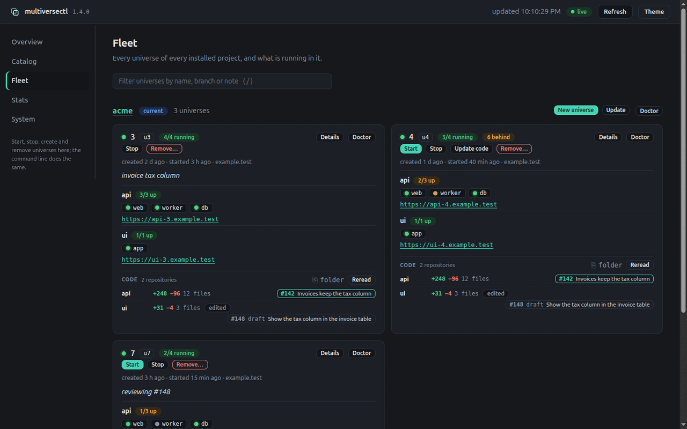
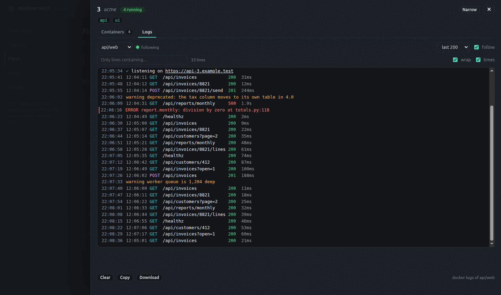
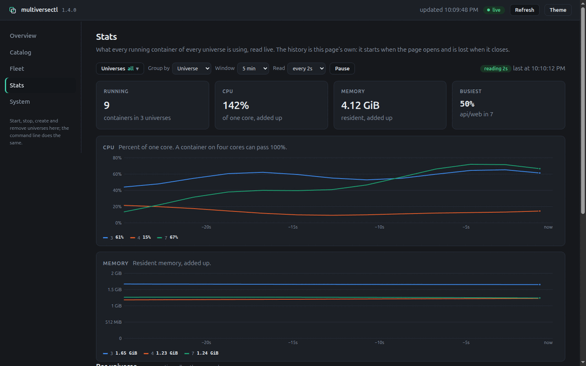

Explore and run it in a browser
A live web view of the catalog, the projects and the fleet of universes, with versions and buttons to start, stop, create and remove universes, behind a token.
See the whole setup in a page
One command opens a page that shows every universe on the machine, what is running in it, and what its code has become. It is live: start a universe in a terminal and the page knows.
$ multiversectl server start --open
✓ serving http://127.0.0.1:7777/?t=… in the background (pid 4242); stop it with: multiversectl server stop
- One card per universe: its branch, its apps, the state of every service, and its addresses as links you can open.
- What the code has become: for each repository, how far it has moved from the branch it follows —
+248 −96 over 12 files— what is behind or edited, and the pull or merge request open for it. - Start, stop, update, create and remove, with what
docker composeprints streaming into the page. - The rest of the setup: the catalog you install projects from, where each has drifted, and the versions of git, docker and the tools on this machine.
Open one up
Details opens a panel on a universe: every container, what it is using, and the address that reaches it. Logs reads a service's log as docker logs would — following as it arrives, filtered to the lines you are after, errors and warnings marked. Colours a program wrote come through, so its output reads as it does in a terminal. Wide gives it the whole window.

Restart restarts a service in place, after a second press to confirm. Everything else in the panel only reads.
Watch what it is using
Stats draws processor time and memory for every running container, by universe, by app or one line each — which is how you find the universe that is eating the laptop. Pick the universes to draw, or slow the reading down. The history is the page's own: it starts when you open it.

Act from the page
A project has New universe, Update and Make current; a universe has Start, Stop, Remove… and, when its code is behind, Update code. Each is the use case the command line runs, started in the background; a universe runs one operation at a time, and different universes run side by side.
Removing is the one that cannot be undone, so it is slower on purpose: the dialog asks for the universe's name, and uncommitted work stops it until a second press says to discard it. --read-only removes every button and makes the server refuse every action.
Running it
server start runs the web view detached, so closing the terminal does not stop it; server status says where it is and server stop ends it. Its output goes to server.log beside the configuration file, which is where start explains itself when it cannot start. To keep it in a terminal instead, run multiversectl-server; Ctrl-C stops it.
An update replaces the program on disk but not the one already running, so self-update and the install script restart it for you, and after a package upgrade server status says it is still on the older build. server restart brings it back with the address and flags it had, and the link stays the same. The flags are in the command reference.
Let a coding agent work with it
An agent needs no server and no protocol: it runs the command line, and -o json gives it what it needs in few tokens. Each universe is its own folder and its own set of containers, so several agents can each work in one at the same time.
$ multiversectl universe ls -o json
{"project":{"name":"acme","root":"/home/me/acme","manifest":"…/multiverse.yaml","universesDir":"…/universes","clones":{"api":"…/api"}},
"universes":[{"name":"3","state":"running","up":"3/3","dir":"…/universes/3",
"checkout":{"api":"…/universes/3/api"},"branch":{"api":"u3"},"urls":{"api/api":"https://api-3.example.test"},
"containers":{"api/web":"acme-u3-api-web-1"}}]}One line, and only what an agent acts on: where the project and its clones are, and per universe whether it runs, the folder of every repository, the branches, the addresses under urls named by app and host, and under containers the running container of each service, for the docker commands exec does not cover. A universe with services that should be up and are not lists them under down.
--json works on every command: --help --json prints a command as a document, and a command that acts prints its messages as one JSON object per line. -o json,less is the least per universe — name, state, folder, addresses — and -o json,wide is everything. multiversectl agents skill install teaches Claude Code all of it once, as a short skill kept in step with the installed version.
Who can use it
A page that can remove a universe must not be open to whoever can reach the port. The server makes up a token the first time it starts and keeps it in server.token beside the configuration, readable by you only; opening the link trades it for a cookie and drops it from the address bar, and without the cookie every request is refused, the websocket included.
It also listens on the loopback address only and answers only requests addressed to localhost, so a page on another site cannot point a name it controls at your machine and talk to it through the browser. Anything that changes state needs a header only the page's own script sends. --expose allows any address, for reaching the page from another device; the token still applies, and the link is then the password.
The page loads nothing from outside, which its content security policy enforces, and builds everything from text, so a branch name or a note cannot inject markup.